هلا والله وغلا… حيّاكم الله! 👋
من مكة إلى العالم
الحج والعمرة 2026 بالأرقام 🇸🇦
حج 1447هـ · عمرة 1448هـ
من مكة
إلى العالم
جهود تستحق أن تُروى… بالأرقام
ابدأ الرحلة ✦
حج 1447هـ · 2026م
1,707,301
حاج وحاجّة
من داخل المملكة وخارجها، بحسب الهيئة العامة للإحصاء
1,546,655قدموا من الخارج
160,646حجاج الداخل
165جنسية
1,485,729وصلوا عبر المنافذ الجوية
ذكور 893,396إناث 813,905
خلف كل حاج
يد تسند متعبًا… ورجل أمن يرشد تائهًا
441,049من القوى العاملة
26,701متطوع ومتطوعة
388,694حاج استفادوا من مبادرة «طريق مكة»
العمرة
10.6 M
معتمر دخلوا المملكة في عام 1447هـ
من نحو 11.4 مليون تأشيرة عمرة صدرت خلال العام
1.27 Mمعتمر من الخارج في نحو 45 يومًا (من 15 ذي الحجة إلى نهاية محرم 1448هـ)
+22.5%نمو القادمين بتأشيرات العمرة (نحو 931 ألفًا) مقارنة بالفترة نفسها من العام الماضي
الذكاء الاصطناعي · حج 2026
عيونٌ لا تنام… وصوتٌ بكل لغة
5,000+كاميرا ذكية
80موقعًا
16خوارزمية ذكاء اصطناعي
31لوحة بيانات
منصة «سواهر» (سدايا + وزارة الداخلية) لإدارة الحشود، بمشاركة أكثر من 600 مستخدم
180+لغة في «نسك AI»
155K+سؤال أجاب عنه «نسك AI» في موسم الحج
≈9Kسؤال يوميًا في وقت الذروة
70%من المحادثات تُحل من أول رسالة
+24%نمو الاستخدام اليومي منذ موسم الحج الماضي
3.4 M+عملية قراءة لبطاقة «نسك» عند نقاط التحقق
أفكار ابتكارية
تقنيات ذكية تغيّر تجربة الحج
الدرون الذكي
مراقبة الحشود والرؤية الليلية من الجو.
المطوّف الرقمي
إرشاد الحاج خطوة بخطوة خلال الطواف والسعي.
روبوت الإرشاد الديني
يجيب على الاستفسارات الشرعية بعدة لغات.
جهاز وجيب الطبي
قياس 5 علامات حيوية عبر الإصبع خلال ثوانٍ.
مساعد «نسك AI»
إرشاد صوتي ونصي بأكثر من 180 لغة.
أنظمة «بصير» و«سواهر»
شراكة الأمن العام وسدايا: رصد سلوكيات الحشود وبوابات افتراضية لمراقبة العبور.
بطاقة «نسك» الذكية
تسهيل التحقق من هوية الحاج وتصريحه.
مراقبة الإجهاد الحراري
ابتكارات قيد التطوير للإنذار المبكر وحماية الحجاج.
العبور الذكي بكف اليد
بوابات تتحقق من الهوية بقراءة كف اليد بدل الإجراءات التقليدية.
مركز «مكة الذكي»
غرفة عمليات تجمع الكاميرات ولوحات البيانات لاتخاذ القرار لحظيًا.
الابتكارات من إنفوجرافيك «الوئام» وتغطيات موسم حج 1447هـ.
من مؤتمر ومعرض الحج 2026
مستقبلٌ يرسمه الابتكار
النسخة السادسة · 9–11 نوفمبر 2026 · تنظمها وزارة الحج والعمرة بالشراكة مع برنامج خدمة ضيوف الرحمن
🎬 شاهد فيلم «المد البشري»
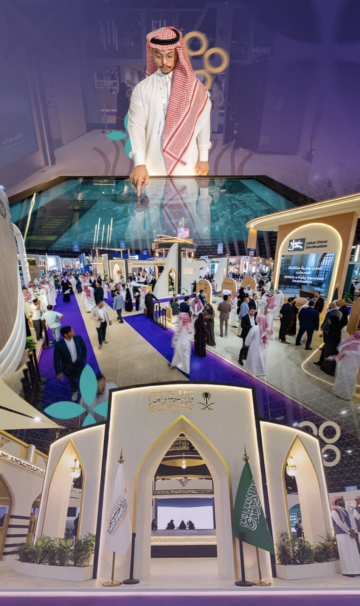
أجنحة المعرض وجناح وزارة الحج والعمرةمؤتمر ومعرض الحج 2026
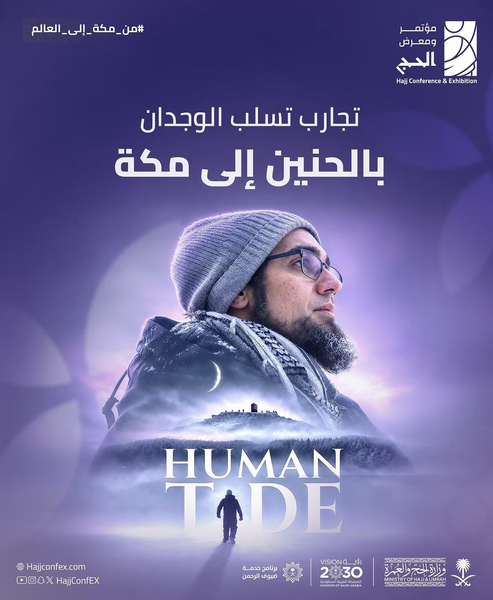
فيلم Human Tide «المد البشري»عُرض في مؤتمر ومعرض الحج 2026
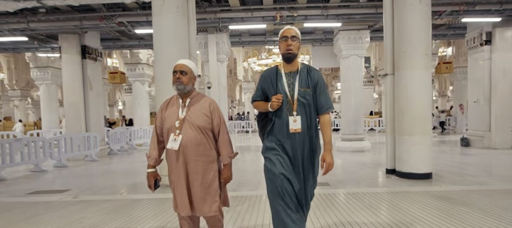
من فيلم «المد البشري»رحلة الشوق إلى مكة
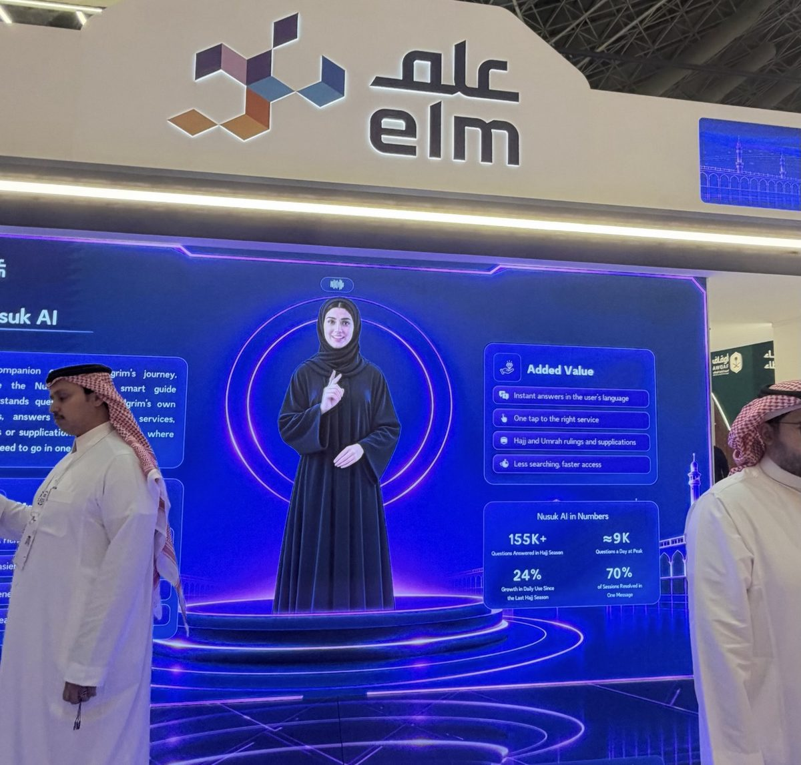
«نسك AI» بالأرقامجناح شركة علم
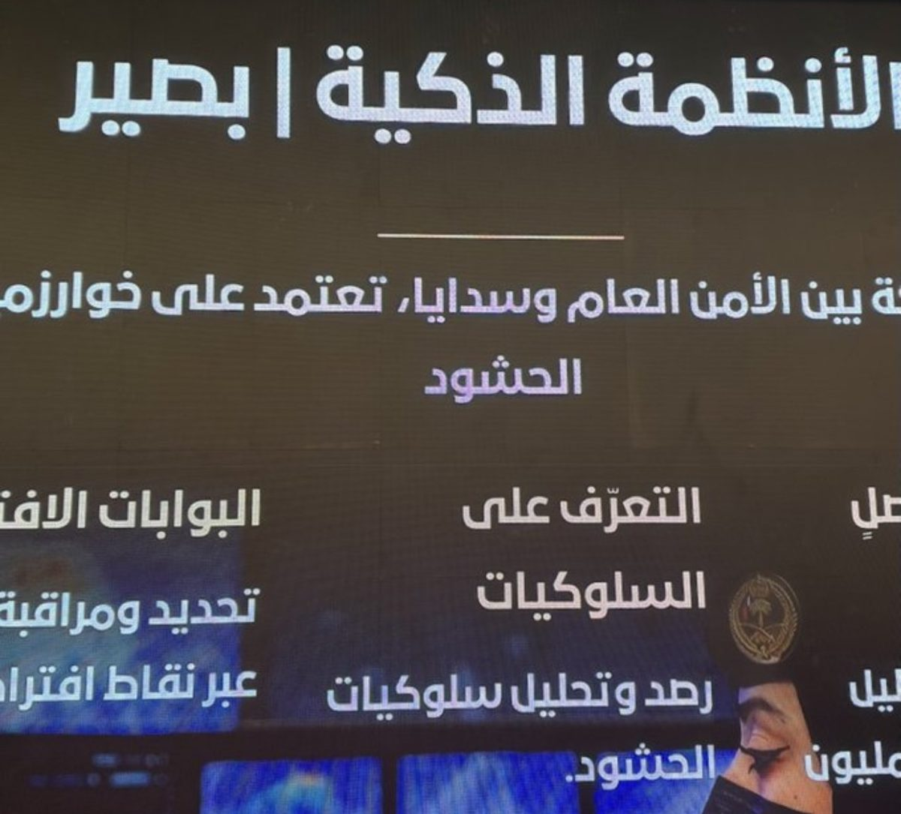
منظومة «بصير»الأمن العام وسدايا
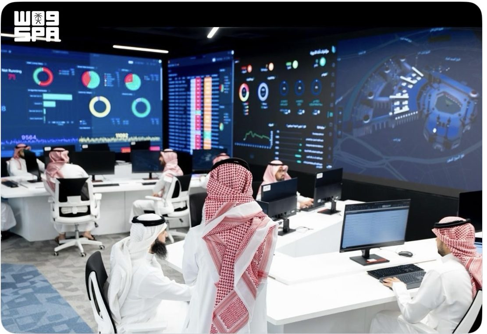
مركز العمليات: 5 آلاف كاميرا و16 خوارزميةواس
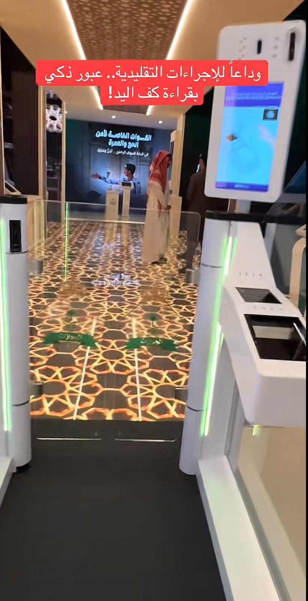
عبور ذكي بقراءة كف اليدالقوات الخاصة لأمن الحج والعمرة
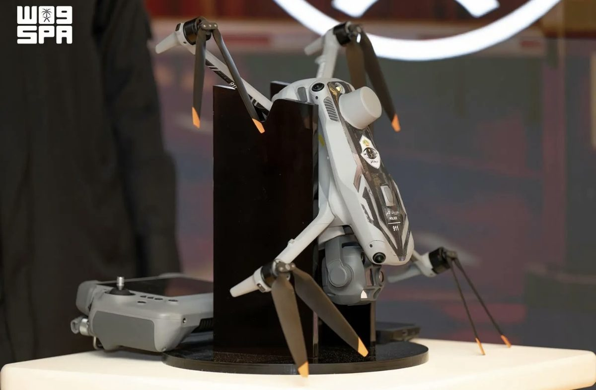
درون الأمن العامواس
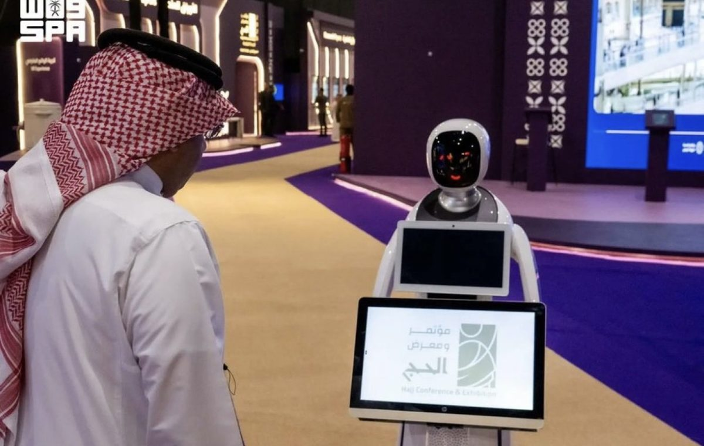
روبوت إرشاد في المعرضواس
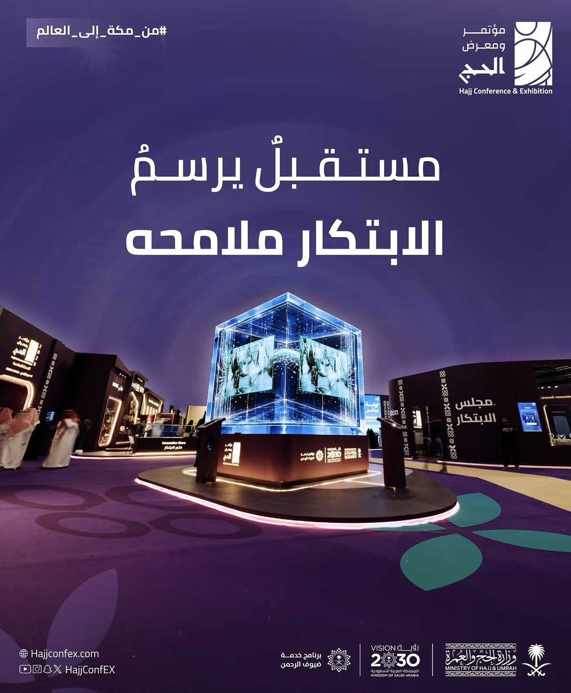
مستقبل يرسم الابتكار ملامحهمؤتمر ومعرض الحج 2026
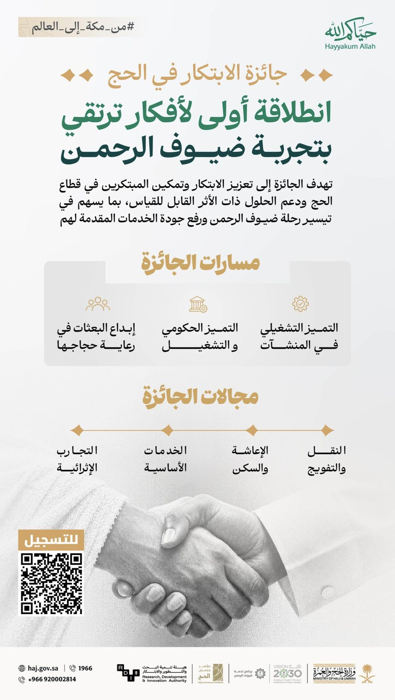
جائزة الابتكار في الحجوزارة الحج والعمرة
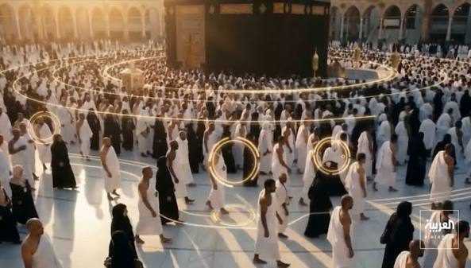
تحليل الحشود في صحن الطوافالعربية
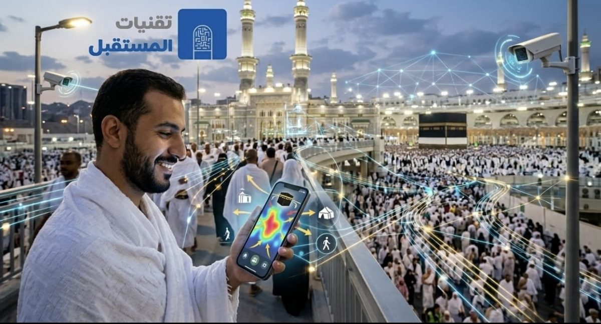
تقنيات المستقبل في خدمة الحاجتصوّر توضيحي
المسجد الحرام في موسم الحج
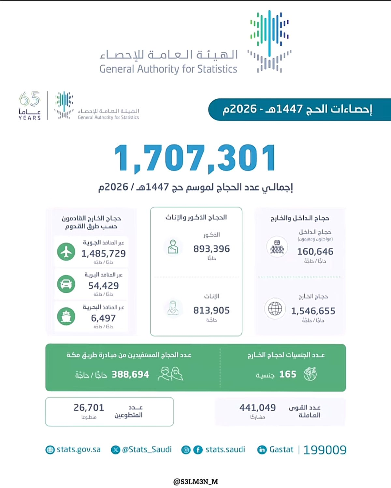
إحصاءات الحج 1447هـالهيئة العامة للإحصاء
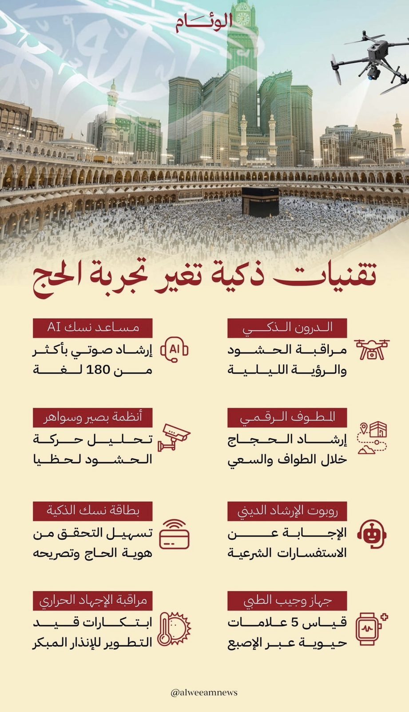
تقنيات ذكية تغيّر تجربة الحجالوئام
الصور من حسابات مؤتمر ومعرض الحج، وكالة الأنباء السعودية (واس)، العربية، الوئام، والهيئة العامة للإحصاء.
مجهودات الحج
من الميدان… بالصوت والصورة
الكاميرات الذكية في المشاعركيف تبدأ القصة من العدسة
تحوّل الحج في السنوات الأخيرةالتقنية في خدمة ضيوف الرحمن
حوار من جناح التقنيةشرح ميداني للحلول الذكية
غرفة العمليات والبياناتعقول خلف الكواليس
الأمن والتقنية لسلامة الحجاجإدارة الحشود لحظة بلحظة
البيانات خلف موسم الحجتقرير مصوّر
«حنا أشهر من علم… حنا خدام الحرم»
كل التقدير للعاملين في الميدان وللعقول خلف الكواليس 🇸🇦🤍
↻ إعادة الرحلة
المصادر: الهيئة العامة للإحصاء (تقرير إحصاءات الحج 1447هـ) · وزارة الحج والعمرة · سدايا · وزارة الداخلية · عرض شركة علم (أرقام «نسك AI» من الجناح).